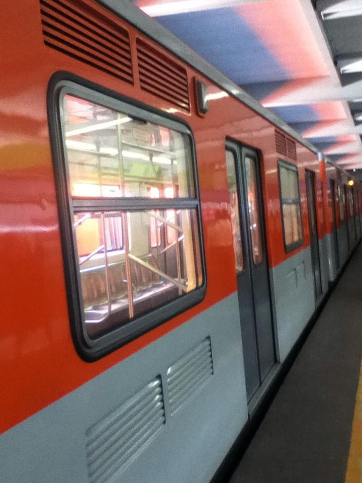

Hace unos dias (presuntamente a principio de año) aparecio en reddit (r/programming) un enlace a una competencia para programadores mediante github 2017Challenges.
Aparentemente, el premio es el reto, la busqueda de nuevo conocimiento y la alegria interior de ser el primero en publicar una solucion (ingeniosa) para un lenguaje determinado…
iniciaron con cuatro pruebas
Hello World: escribir un programa “hola mundo”
Reverse String: invertir el orden de una cadena
Lonely: encontrar elementos no repetidos en un arreglo con longitud y valores aleatorios, con opcion de mesclar enteros y caracteres
Majority Element: dentro de un arreglo de longitud y elementos aleatorios, localizar el valor que se repita almenos la mitad de la dimencion del arreglo
Invert Binary Tree: invertir un arbol binario
El dia de hoy se incluyo un nuevo reto
- Find the Difference: comparar dos cadenas donde una difiere en incluir un caracter adicional, el punto es desplegar el caracter discordante
Cualquier lenguaje de programacion es valido… he? pues si, lo que mas abunda son python, seguido por java y javascript…
Todo lo necesario para que el codigo se incluya en el repositorio esta explicado
en el readme.md del proyecto (o en internet)
No ser un guru de la programacion es un buen motivo para participar, como tambien aprender a colaborar en un proyecto mediante git(hub) (no tengo ni idea que hacen fetch, merge, o el orden en que deba realizarce el pull), ademas puedes poner en practica estructuras “complejas” como los arboles binarios, que en mi caso solo los habia visto de lejos con respeto y admiracion en el “k&r” y “C como programar”
de momento llebo los 4 primeros retos en c (aqui) (aun pendientes de aprobacion los ultimos 2), cuando tenga mas confianza intentare con go y en algun futuro lejano quiza con lisp.
Happy Hacking!